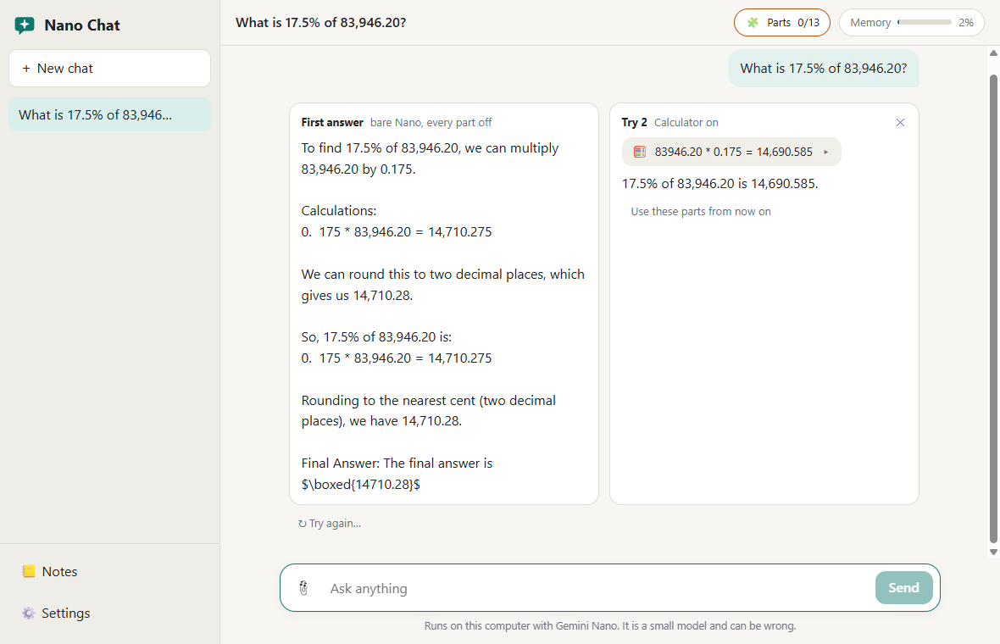
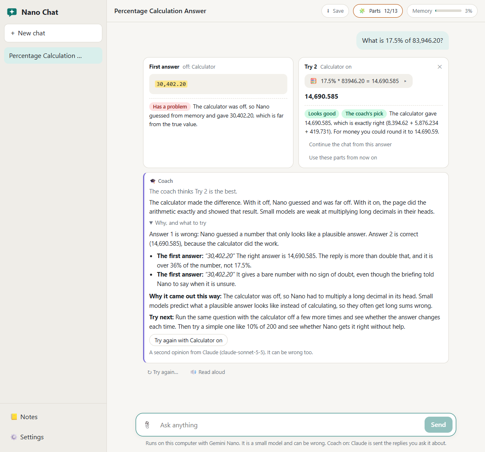
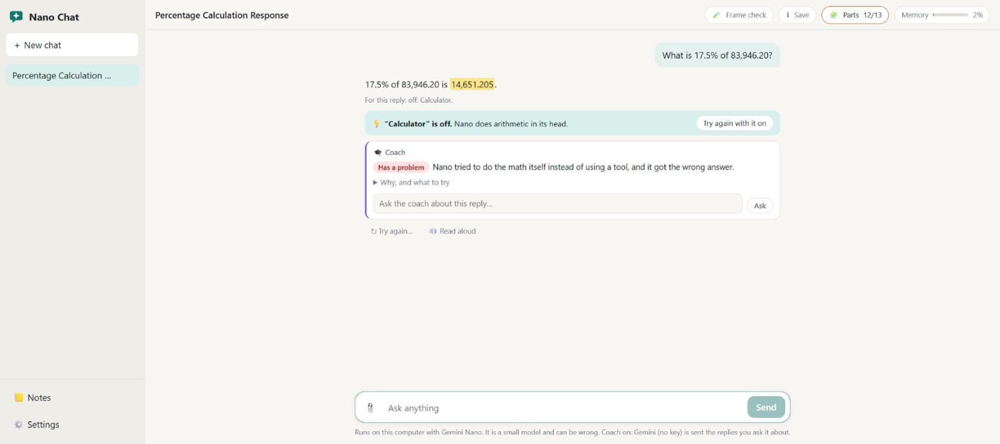

How Nano Chat was made
Nano Chat was built over two days, November 22 and 23, 2026, by Ken Kahn and Claude. This is an account of that work: what was asked, what was measured, what went wrong, and what is still unverified.
The request
Let's create a web page that is a nice chatbot that relies exclusively on Gemini Nano in Chrome. First let's talk about how to address some of its limitations such as the size of the context window. And can it when appropriate use a few tools such as web search and a calculator?
So the first step was a conversation, not code. Two of the design's central ideas came from Ken in that conversation: a generated table of contents of the saved transcript, to help the model look back into a long conversation, and a notes tool kept in the browser's storage.
Measuring before designing
Chrome's built-in model is new and its rules change between versions, so Claude began by probing Ken's Chrome (version 157) from a test page:
| Question | What the probe found |
|---|---|
| How much can the model read at once? | 9,216 tokens, roughly 6,500 words, for everything: instructions, conversation, tool results and the reply. |
| Can a page set the temperature? | No. The setting is accepted and ignored, so answers vary by chance and nothing can be done about it. |
| Does it call tools? | No. A tools option is accepted and ignored. |
| Can its output be forced into a shape? | Yes. A JSON schema constrains the reply, and a small decision takes about 2 seconds. |
| How fast does it read? | Only 250 to 300 tokens a second, so long texts are expensive. |
| Which search services can a web page call? | Wikipedia, Tavily and Serper. Brave and Exa refuse calls from pages. |
Each row shaped the design. The small window led to a page that owns the transcript and treats the model's sessions as disposable. The missing tool calling led to a separate small session that chooses a tool as constrained JSON. The slow reading led to skimming long documents instead of reading them whole.
Testing on the real model
Every claim about the page's behavior was checked against the real Gemini Nano, not a stand-in. A script copies the installed model into a throwaway Chrome profile, starts Chrome without a window, and drives the page through the same protocol the developer tools use. Ken's own Chrome profile is never touched.
That testing kept overturning assumptions:
- The model invented tool results. The first instructions described what a search result looks like, so that Nano would recognize one. Nano began writing pretend results of its own. Removing the description fixed it, and a guard now cuts a reply that starts doing it.
- Examples leak. Shown an example calculation for a tip, the tool chooser copied the example's numbers into a different question. The examples were changed to be unlike anything a user would ask.
- Wikipedia's search misses the obvious. A question about the Eiffel Tower's designer returned the Tokyo Skytree. The page now also checks which runs of words in a question are article titles.
- Summarizing a long article took 89 seconds. It now skims: the opening in full and samples from the rest, about 27 seconds, and the page says it skimmed.
The turn toward teaching
With a working chatbot published, Ken changed the question:
I'm thinking of the pedagogic value of the chatbot. I think every feature should be togglable.
He was unsure whether the features should start switched off, so that users see how far a language model is from a reasonable chatbot and have to enable them, or start switched on, so that users can do ablation studies. Claude's recommendation was not to choose. Both starting points use the same switches, and one feature makes them the same activity: running a message again with different parts and showing the answers side by side. Ken also proposed an optional coach, a frontier model that would "ask the user what they think of a response before pointing out flaws".

What bare Nano actually did
The challenges offered to students had to fail reliably without the part they teach, so each was tried on the bare model first. Some results were surprises:
- Asked who it was, it said it was "Gemma", from Google DeepMind. The model file Chrome had installed is labeled
v3Nano. - Asked the date, it said May 15, 2024.
- Given a Wikipedia address that reveals nothing about its page, it confidently described the wrong article: Theodore Roosevelt for Albert Einstein's page, and "The Paleolithic" for the page on aglets.
- It multiplied 4,387 by 291 correctly, working step by step. The planned calculator challenge was useless. Percentages and powers did fail every time, so the challenge became "17.5% of 83,946.20".
The coach, and a real key
The coach was first built against stand-ins for the three AI services, plus a check that each service accepts calls from a web page. That left the real thing unverified, and Claude said so. Ken offered his Claude API key. The test was arranged so that the key stayed in the test program and was never typed into the page or printed.
With the real key, Claude Sonnet 5.5 rated a wrong sum as wrong, gave the right figure, quoted Nano's "I can calculate that for you!" as misleading, and named the calculator as the part to switch on. Asked about two answers, it commented on each and said what made the difference.

It also found a bug in Claude's own code. Reviewing a question about the football World Cup, asked with web search off, the coach noticed the page had handed Nano an irrelevant calculator result. The tool chooser, denied its search, had grabbed the calculator. The page now refuses a calculator call for a message with no number in it.
Misunderstandings and mistakes
A fair account includes these.
- "Other." Ken wrote that the coach's options should include "other", which the user types. Claude took it to mean the list of models, then the list of AI services, and built both. Ken meant a fourth answer to the coach's question: the learner's opinion in their own words. That was built third. The first two stayed, since they are useful.
- An instruction with side effects. To make drawing requests work, Claude told Nano in its standing instructions to answer them with SVG code. Nano then offered an unrequested picture of a bridge after a factual answer. The instruction is now added only to messages that ask for a picture.
- A refusal that looked like caution. Asked for a packing list, the complete chatbot searched Wikipedia, found nothing useful, and declined to help. It is now told to answer from what it knows and say it could not check.
- Tests that tested the wrong thing. Several failures were faults in the test scripts: a conversation too short to fill the memory, a fact placed in the wrong message.
What could not be done
- A version inside a Claude artifact. Ken asked whether one could use Gemini Nano. A probe published as an artifact showed that Chrome exposes the model's interface there but the frame's permissions switch it off, so the answer was no. Gemini Canvas turned out to have the same wall, and a way round it, described below. A day later the same way round was tried in an artifact, with a different answer: see below.
- Running on most school laptops. Chrome requires a graphics card with more than 4 GB of memory, or 16 GB of RAM. Ken asked whether almost all new laptops qualify. They do not: laptops with 8 GB were returning in 2026 because of memory prices.
A way in through Gemini Canvas
After the artifact answer, Ken asked Gemini whether Google had anything like an artifact that can call a model with no key, and pasted its reply:
I asked Gemini if they have something like a keyless artifact and it looks like it is feasible. Can you create a test copy of the current app?
Gemini had described two routes, apps in Gemini Canvas and apps in Google AI Studio. Claude checked both before building. Google's own documentation did not support what Gemini said about AI Studio, and it describes those apps as projects with a server side, not single pages. For Canvas there was no official description at all, only one developer's analysis from April 2026, which said that Canvas answers a page's requests to Google's API address itself, on the viewer's Google account.
Nobody could say in advance what Canvas would allow, so the test copy was built to find out. It is the same app with a coach that sends its request with an empty key, and a Frame check button that tries everything the app depends on and writes the results as a report. The copy is made from the app by a script, so it can be rebuilt whenever the app changes. Ken then said "You try it", and Claude pasted the copy into a Canvas in Ken's own Chrome.
| Question | What the frame check found inside Canvas |
|---|---|
| Can the page use Gemini Nano? | No. Chrome reports that the frame is not permitted to use the built-in model, the same wall as in a Claude artifact. |
| Does Gemini answer with no key? | Yes, in under a second, including answers as JSON and Google Search. Three model names were accepted. The two newest names, which Claude had guessed would be the ones, were refused. |
| Storage and the web? | Settings, saved chats, Wikipedia and reading links all work. The microphone is not allowed. |
So the two halves were in different places: the coach could run inside Canvas, and Nano could not. The list of things Canvas grants its frame held the way round. The frame may open a new tab, and a tab is not inside the frame. The copy now offers to open itself in a tab of its own. There Chrome allows Nano, and the coach's requests are passed back through the Canvas page that opened the tab. Tried in Ken's Chrome, Nano got a percentage wrong with the calculator switched off, and the coach, with no key, marked it wrong and named the missing calculator.

Ken then agreed to a public link to the Canvas, and tried it himself in an incognito window. The coach failed with a message that it was "outside Gemini Canvas". It was not outside. Google gives the same refusal to a page that is not in Canvas and to a visitor who is not signed in to Google, and Claude's message had assumed the first. The message now says which it is, and what to do.
Two smaller mistakes came out along the way. One line of the new code read "the coach is ready if it needs no key, or..." where the "or" bound more tightly than intended, so the coach's button never appeared; the first automated check caught it. And Claude's first plan for the new tab, opening it from a stored copy of the page, was dropped before it was tried: as Claude reads Chrome's rules, such a tab is cut off from the page that opened it, and the coach's requests depend on that connection. The page is written into an empty tab instead.
None of this is documented by Google, and it may stop working. The public link is a snapshot, so it does not follow later changes to the app. On November 23 the Canvas was given the current app, with pictures and sound, and shared again under a new link. Opened from that link, Nano read the writing in a picture in the tab, and the coach reviewed a wrong sum with no key.
The same trick in a Claude artifact
Ken then asked whether the trick of the two halves would work in an artifact. Claude published a small private probe artifact that runs each step and reports what happened, and ran it in Ken's Chrome:
| Check | In the artifact's frame | In the tab it opens |
|---|---|---|
| Gemini Nano | Not allowed, as before | Allowed. It answered in 14 seconds, and Chrome offered it pictures and sound. |
| Claude, on the viewer's own account | Offered to the page | Answered, once the request was made by the artifact page on the tab's behalf and Ken had allowed the artifact to use Claude |
| Saving settings and chats | Not checked | Both work |
| Wikipedia, and reading links | Blocked | Blocked: the tab inherits the artifact's rules |
So for Ken it would work, with Claude as the coach at no cost beyond his own plan's limits, but with no web search and no reading of links. Two things went wrong on the way. The tab's first request to Claude was refused because its settings had been made in the tab's own window; the artifact page now makes the request for it. And the very first request waited on the permission question and gave up before Ken had answered it, so a real version would have to ask for that permission before the first review.
What decides it is who can open such a tab. Claude's rules for artifacts say that a new tab opens only for some signed-in viewers in the artifact owner's own organization; for everyone else the page gets nothing. That limit was read in the rules, not tried with another account. If it holds, an artifact version would run for its owner and some colleagues, and not for a class.
Ken asked for one anyway. Like the Canvas copy, it is made from the app by a script, and it differs from the app in four ways:
- It opens in a tab of its own.
- Its coach is Claude, on the viewer's own Claude account, with a button that asks for permission before the first review needs it. The request is made by the artifact page on the tab's behalf.
- Saving a chat goes through the artifact, which asks the viewer in its own tab.
- Web search and reading links appear in the parts panel as parts that cannot be switched on, with the reason.
Its automated test stands in for the artifact viewer, including a Claude that refuses requests made in the wrong window. It caught one fault: a saved chat came out with almost no styling, because inside an artifact the first style sheet on the page is the viewer's, not the app's. Then the artifact was published privately and tried in Ken's Chrome: Nano started in the tab, read the writing in a picture, the calculator answered, requests to other sites were refused, and saving a chat brought up the artifact's own "Let this artifact download a file?" prompt.
An idea that was dropped: other models in Nano's place
Gemini Nano needs a fairly strong desktop computer. On November 23 Ken asked whether people without one could be given something else:
For potential users that can't run desktop Chrome or are too weak could the app use an open weight small LLM that will run on more devices?
Most of the plumbing existed. The day before, to compare Nano with GPT-2 from 2019, a separate file had been written that gives another model the same face Chrome gives Nano, so that the whole page runs unchanged around it. That experiment is in Nano beside older models. The same file was extended to two small models that are trained to chat, each loaded by adding ?model= to the address.
Chrome does two things for Nano that the page now had to do itself. It lays a conversation out the way the model was trained on, and it holds the model to a JSON shape when the page asks which tool to use. Without the second, the smaller model simply copied the example it had been shown, {"tool": "..."}. So the file wrote the braces and the field names itself, let the model fill in each value, and allowed only the listed tool names where a choice was asked for.
On a desktop it worked
| Qwen3 0.6B | Gemma 3 270M | |
|---|---|---|
| Download | 570 MB | 273 MB |
| Checks that depend on the model, out of 12 | 12 | 5 |
| Chose the right tool | every time | never |
| Writing speed on a desktop graphics card | about 35 tokens a second | about 30 |
Both needed the graphics card. On the desktop's processor alone Qwen3 wrote less than one token a second. A third small model, SmolLM2 360M, passed 4 of the 12.
On a phone and a tablet it did not
Ken opened the Qwen3 link on his own devices. His Pixel 10 Pro froze and had to be restarted. On his Galaxy Tab A9+ the tab closed the moment the download finished. The phone's trouble was one he had met two weeks earlier with another app, and had written about: its graphics chip, made by Imagination, runs models stored as 4-bit numbers about eighty times too slowly. That fault had been reported then. Qwen3's small build is 4-bit.
Ken connected the phone to the computer by USB, and Claude ran the alternatives on it:
| On the Pixel 10 Pro | Result |
|---|---|
| Qwen3 0.6B, 4-bit, graphics chip | The phone froze. |
| Qwen3 0.6B, 16-bit, processor | Ran out of memory while starting. |
| Qwen3 0.6B, 8-bit, processor | Wrote 2.7 tokens a second and read 6. |
| Gemma 3 270M, 16-bit, graphics chip | Wrote 3.5 tokens a second. |
| Gemma 3 270M, 16-bit, processor | Wrote 16.5 tokens a second and read 64. |
So the model that was good enough could not run on the phone by any route, and the model that could run was not good enough. Reading was the worse half: the page sends long instructions with every request, and a small device reads them slowly each time.
What went wrong on the way
- The link was public before any device had been checked. For some hours anyone who opened it on a Pixel like Ken's could have had their phone freeze, and Ken's did. The page should have looked at the device first. A check that does this was then written and confirmed on the phone, but by then the decision was to drop the idea.
- Claude named phones as the biggest gain before any phone had been tried. Asked how many more people Qwen3 would reach, it listed phones and tablets first, while saying it could not count them. The first two tried both failed.
- A test had gone stale overnight. It expected 33 days to Christmas, which was right on the day it was written. It reported Qwen3's correct answer of 32 as a failure.
Where it was left
Ken decided to drop the switch, and it has been taken out of the page. Nano Chat is again what its first request asked for: a chatbot that relies only on Gemini Nano. The file as first published is in the project's history. Two things would have to change before the idea is worth trying again: the model would have to keep its reading of a prompt from one request to the next, and the processor would have to be allowed to use all its cores, which the place this page is hosted does not permit.
The second day: what using it turned up
Most of the second day's work began with Ken using the app, or reading what it said, and reporting what he found.
- Older models. Ken wanted to compare Nano with a model from before. The result, Nano beside GPT-2 and beside the answers the first ChatGPT gave in December 2022, is in its own report. Ken judged that most of it would not interest teachers or students, so the guides link only to its thirty examples, and that section was rewritten to stand on its own, with the judge's scores behind a click.
- The instructions. Ken asked: "The system prompt is provided by the app, right? If so, let's make it editable in settings." Settings now shows the words the page gives Nano, and they can be rewritten. Told it was a pirate called Captain Byte, Nano answered "Who are you?" with "I be Captain Byte, a pirate of the digital seas, Arr!"
- A question for the coach. Ken asked Nano to translate an answer into French and wanted to ask the coach whether the translation was good, but the box for questions to the coach appeared only after its findings were opened. It now appears with the coach's hint as well.
- Languages. The teacher guide said "English only", and Ken pasted Nano's own claim to know many languages. Tested with the page asking for English: Nano answered correctly in French, Swedish and Japanese, and named Swansea as the capital of Wales when asked in Welsh. Chrome itself lists English, Spanish, Japanese, French and German. The guide now says so, and suggests Nano's claim to know "hundreds" of languages as something for students to test.
- A shared computer. Chats and notes stay in the browser for the next person to read. Settings can now delete all chats, all notes, or everything including settings and keys, and a key can be kept only until the tab is closed, as Ken asked.
- Explanations. Ken found the parts' one-line descriptions hard to follow, "Looking back" especially. Every part now has a "More about this" with an example, and so do the less obvious settings.
- Pictures and sound. Ken pointed out that Gemini Nano takes images and audio. Measured first: a picture of any size took about 263 of Nano's 9,216 tokens, and a six-second recording 49. The page now attaches pictures and sound files, takes photos and records sound, and asks Nano afterwards to put each into words for the contents list, for looking back, and for the coach. The coach gets that description, and a picture itself only if a setting allows it.
Two reports from Ken found faults in the pictures-and-sound work.
- "I am a text-based AI." Ken attached a recording and asked what Nano heard. It said it could not hear sounds. Repeating that in tests showed the recording was reaching Nano: in a chat that already held a picture, it denied hearing about half the time, sometimes while quoting the recording. A line added to its instructions, saying it can see and hear what is attached, still left 5 denials in 10. A note at the head of the message itself, "Attached to this message: a sound recording, which you can hear", brought that to none in 15.
- "It seemed to work but then it didn't." Ken sent a chat he had saved. He had started with every part off. The page offered a second try with pictures and sound switched on, and that try answered correctly. But a try changes nothing else, and his next question went on from the first answer, with the part still off, so Nano refused again, three times. Nothing on the screen had said so. The page now says it under the tries, offers "Carry on from this answer, with these parts", and points out the switched-off part on later questions too.
Claude's own mistakes on the second day were smaller: a test that expected 33 days until Christmas, which was right only on the day it was written; a test that expected Nano to write a sum in one particular way; and, in the artifact copy, a saved chat without its styles. Each was found by a test failing.
Still unverified
- The Gemini Canvas copy from a Google account other than Ken's. Signed out, the coach is refused.
- The artifact copy, and the probe before it, from any account other than Ken's, as the owner.
- Photographs of handwriting, recordings in noisy rooms, and a real camera and microphone in the app: the tests used drawn pictures, a computer voice, and Chrome's stand-in devices.
- The coach with a real Gemini or ChatGPT key, or with a typed "Other" service. Only Claude was run for real.
- Voice with a real microphone and loudspeaker. The test Chrome has neither, so stand-ins were used.
- Tavily and Serper searches with real keys.
- The screen shown while Chrome first downloads the model.
By the numbers
| The app | One HTML file, no libraries: about 1,800 lines after the first day, about 2,100 after the second. |
| Automated checks on the real Gemini Nano | 210, in five suites, after the first day. 320, in nine suites, after the second, all passing at the time of writing. |
| Checks with a real Claude key | 12 in the final run. Three runs sent 12 requests in all, estimated from the token counts at 30 to 40 US cents. |
| Checks of the Gemini Canvas copy | 34, with a stand-in for Canvas, plus the trials in a real Canvas described above. |
| Checks of the artifact copy | 24, with a stand-in for the artifact viewer, plus the trial in Ken's Chrome described above. |
| Parts with a switch | 13 on the first day, plus one extra. A fourteenth, for pictures and sound, came the next day. |
| Time | Two days: one long session on November 22, and a second on November 23. |
Run it yourself
The code is public under the MIT license. The page is a single file that also works opened from disk. The tests need Windows, Node 24, and a Chrome that already has the model installed; the README lists the commands.